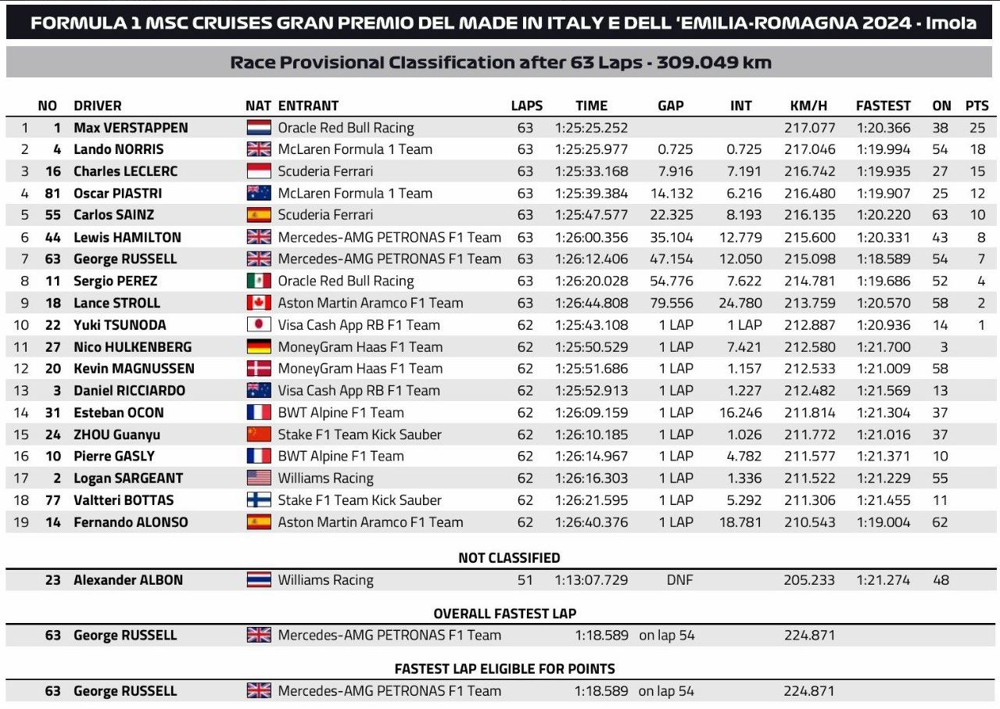
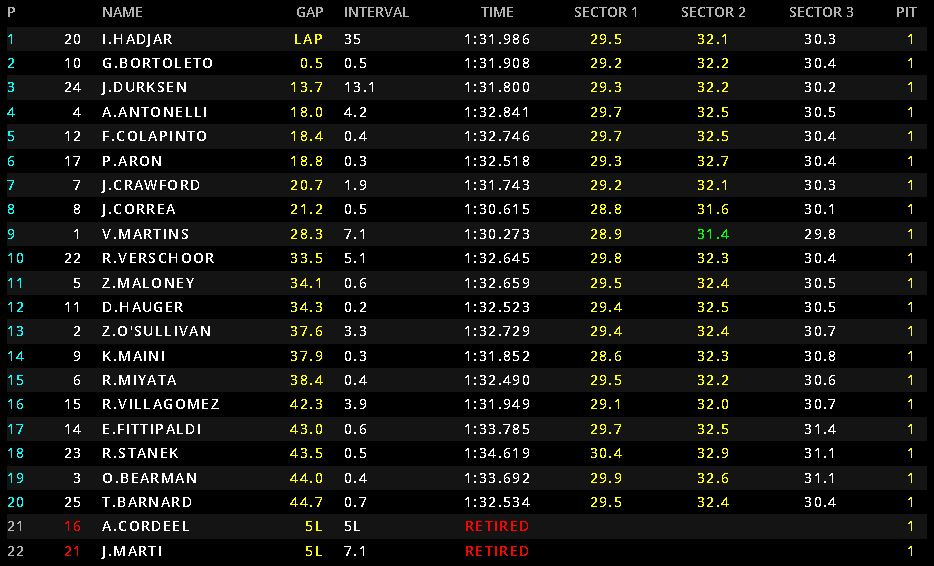
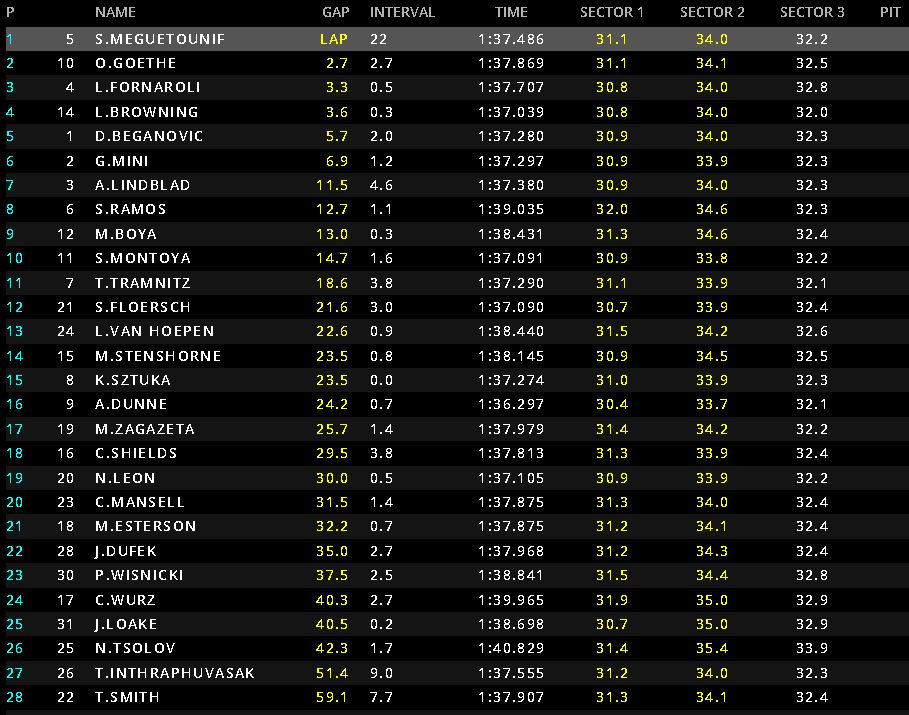

Día 3 del GP de Imola
Max Verstappen vuelve a ganar, pero pidiendo la hora ante un gran Lando Norris viendo como McLaren ahora tiene más rimto que Ferrari y se han convertido en la alternativa a Red Bull en la lucha por las victorias, ya veremos si por el mundial.
Carrera marcada por la degradación de los neumáticos en la que no se han visto adelantamientos hasta las vueltas finales por parte de aquellos que estaban guardando goma para el final de la carrera, siendo esta la unica parte emocionante de la misma.
Emocionante carrera marcada por el desgaste de los neumáticos superblandos que decidio todo en las paradas a boxes en la que a Cordel se le salio una rueda que no estaba atornillada y acabo golpeando en la pistorla de un mecánico de Pepe Martí impidiendo que le colocara la tuerca y saliéndose a este también una rueda dejando a los dos fuera de carrera, mientras el otro piloto de campos, Hadjar ganaba la carrera.
Incrible carrera que se decide en las últimas vueltas con gran variedad de adelantamientos devido a la degradación de los neumáticos y por segunda vez en el fin de semana se le escapa la victoria a Oliver Goethe para el equipo campos en las últimas vueltas después de ir liderando la carrera.
